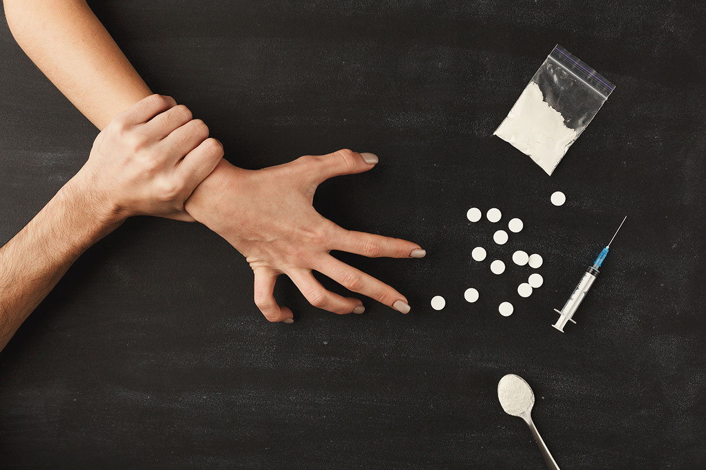

Madde bağımlılığı, bir bireyin yasa dışı veya yasa dışı olmayan maddeleri aşırı ve kontrolsüz bir şekilde kullanması ve bu maddelere karşı fiziksel ve psikolojik bir bağımlılık geliştirmesidir. Bu durum, madde kullanımının kişinin günlük yaşamını, işlevselliğini ve ilişkilerini olumsuz yönde etkilediği durumlarla karakterizedir.
Madde bağımlılığı genellikle birçok faktörün etkileşimiyle ortaya çıkar. Genetik, çevresel, psikolojik ve sosyal faktörler madde bağımlılığı riskini artırabilir. Madde bağımlılığının yaygın belirtileri arasında maddeye karşı artan tolerans, maddeyi kullanmaya yönelik yoğun arzu, madde kullanımını durdurmakta veya kontrol etmekte zorluklar ve madde kullanımı nedeniyle işlevsellik kaybı bulunur.
Madde bağımlılığı ciddi sağlık sorunlarına, sosyal ve ekonomik problemlere, iş kaybına, yasal sorunlara ve ilişki sorunlarına yol açabilir. Ancak, madde bağımlılığı tedavi edilebilir bir durumdur. Tedavi genellikle madde kullanımının bırakılmasına ve bağımlılıkla mücadele edilmesine yönelik terapileri içerir. Destek grupları, aile terapisi ve rehabilitasyon programları da madde bağımlılığı tedavisinde önemli rol oynar.